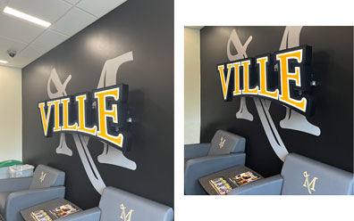
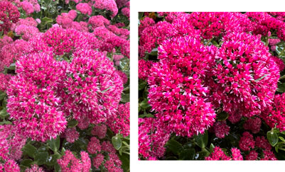
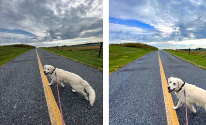
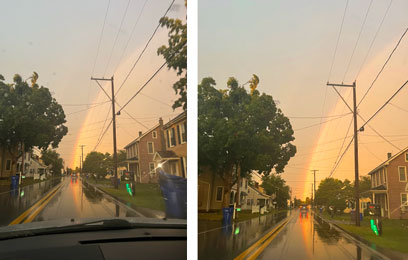

Digital Photo Project - AENG 110 |
|
| Home | Infographic Project | Video Project | Digital Photos | |
AENG 110 Digital Photo ProjectI went about making this photo project by first assessing what the guidlines were and the task that needed to be completed. The requirements said to take photos using adequate resolution, effective lighting, and interesting composition. The photos were to be taken indoors and outdoors and use three different composition techniques. The original and edited images were to be placed together in Adobe InDesign with a caption of what was done to the edited photo. | |
|  |
Ville LogoTo edit this photo of the Ville logo I cropped the image to a square of 18.5in and kept the 72ppi resolution. The image size is now 5.12M. I used the clone stamp tool to get rid of the trash and recycling cans. I adjusted the levels by bringing the shadows up and the highights down to make the blacks blacker and the whites whiter. |
Pink FlowerTo edit this photo of the flower I cropped the image to a square of 4.61in and changed the resolution to 300ppi. The image size is now 5.47M. I adjusted the levels by bringing the shadows up and the highights down to make the blacks blacker and the whites whiter so that the main flower could stick out more. |  |
|  |
Aspen the DogTo make changes to this photo of my dog Aspen I cropped the image to a square of 4.61in and changed the resolution to 300ppi. The image size is now 5.47M. I adjusted the levels by bringing the shadows up and the highights down to make the blacks blacker and the whites whiter so that the main flower could stick out more. |
Rainbow on the RoadTo edit this photo of a rainbow during a storm I cropped the image to put the rainbow in the center of the frame and get rid of the dash. It is now a height of 5.01in and width of 4.04in with a 300ppi resolution. The image size is 5.22M. I rotated it to make the horizon line straight. I adjusted the hues of the yellows, greens, and reds to bring out more vibrant colors. I used the clone stamp tool to get rid of the raindrops on the windshield. |  |
| Home | Infographic Project | Video Project | Digital Photos | |
©2023 Chloe M. Enck | |